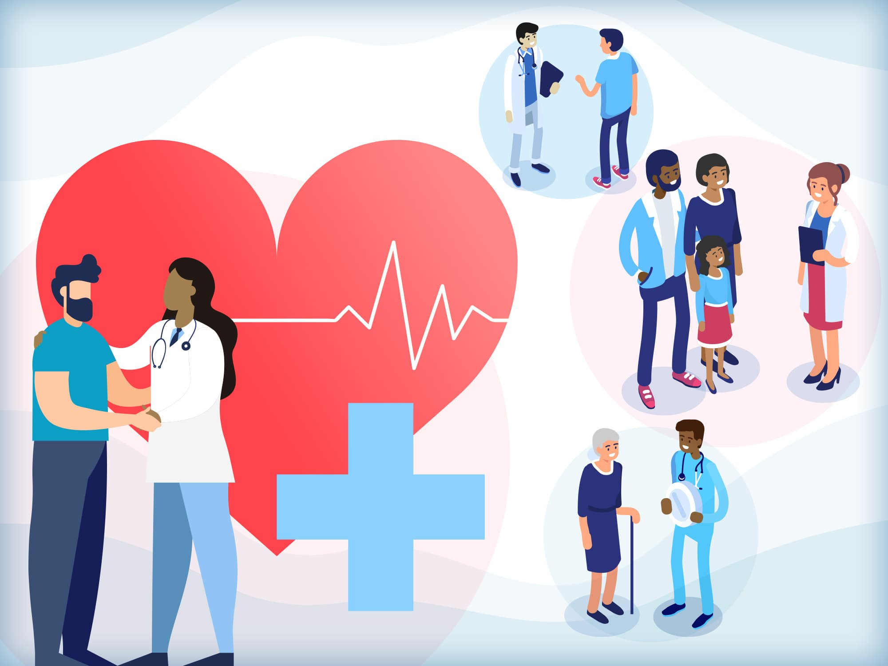

WebMd - Healthier should always be within reach
The leading source for trustworthy and timely health and medical news and information.
The website's objective is to offer consumers a trustworthy...
The website's objective is to offer consumers a trustworthy and convenient source of information on illnesses, their symptoms, suitable treatments, and prevention methods. It strives to advance health literacy, equip people with the knowledge they need to choose healthcare wisely, and assist them in maintaining their health and wellbeing. By assisting users in comprehending a range of medical disorders and providing advice on how to manage their health, this website is a helpful educational resource. For individualized medical advice and care, it does not, however, displace the requirement for consultation with healthcare specialists.
Endometriosis, a condition where tissue similar to the lining of the uterus grows outside the uterus, can manifest various symptoms, which may vary among individuals. Common symptoms of endometriosis include: Pelvic Pain: Severe menstrual cramps that may start before and extend several days into the menstrual period. The pain might also occur during ovulation or at other times in the cycle. Painful Intercourse: Pain during or after sexual intercourse, often localized to deep within the pelvis. Pain with Bowel Movements or Urination: Discomfort during bowel movements or urination, particularly during menstruation. Excessive Bleeding: Heavy menstrual periods or bleeding between periods. Infertility: Difficulty getting pregnant or infertility can be a symptom in some cases, although many women with endometriosis can conceive. Fatigue: Feeling extremely tired or lacking energy, especially during menstrual periods. Gastrointestinal Symptoms: Diarrhea, constipation, bloating, or nausea, particularly during menstrual periods. Other Symptoms: Some individuals may experience other symptoms like lower back pain, headaches, or leg pain.
Emotional Well-being: Living with chronic pain and the uncertainty of a chronic condition can affect mental health. Anxiety, depression, stress, and feelings of isolation are common among individuals with endometriosis. Quality of Life: The chronic pain and associated symptoms often interfere with daily activities, work, relationships, and overall quality of life. Fatigue and limited energy due to pain can significantly impact productivity and social interactions. Fertility and Reproductive Health: Endometriosis is one of the leading causes of infertility in women. The condition can affect fertility by causing pelvic adhesions, inflammation, and ovarian cysts, hindering the ability to conceive.
Weak and brittle bones don’t have to be part of aging. Your bones are a living tissue that rebuilds itself. Your bone mass reaches its peak between your mid 20s and mid 30s. You can “borrow” from that banked strength as you get older. Here’s how to get, and keep, your bones dense at any age.
🖊️ 3 people have signed this petition and support this cause.
Petition Description:
We, the undersigned, call upon healthcare institutions, medical organizations, and governmental health agencies to prioritize transparency and accessibility in medical research and guidelines. The objective is to promote health literacy and empower individuals to make informed decisions about their healthcare. In alignment with the mission of the website that provides trustworthy information on illnesses, symptoms, treatments, and prevention methods, we request the following actions:
Open Access to Medical Research: We urge institutions conducting medical research to make their findings openly accessible to the public. This includes making research papers, clinical trials, and studies available without paywalls or subscription fees, ensuring that everyone can benefit from the latest advancements in medical science.
Education and Awareness: Promote health literacy by investing in public awareness campaigns and educational initiatives that empower individuals to better understand medical conditions, prevention methods, and treatment options. These campaigns should be accessible to people of all ages and backgrounds.
Accessibility and Inclusivity: Ensure that all healthcare information and resources are accessible to individuals with disabilities. Websites, documents, and other materials should be designed with inclusivity in mind, making them usable for everyone.
By signing this petition, we hope to create a more transparent, accessible, and user-friendly healthcare information environment, ultimately contributing to improved health literacy and the ability of individuals to make well-informed choices about their health and well-being.
🖊️ Onahi from Brooklyn supports this.
🖊️ Angel from Queens supports this.
🖊️ Muhammad from Harlem supports this.
The leading source for trustworthy and timely health and medical news and information.
The telehealth solution more people and organizations trust for a full range of healthcare needs